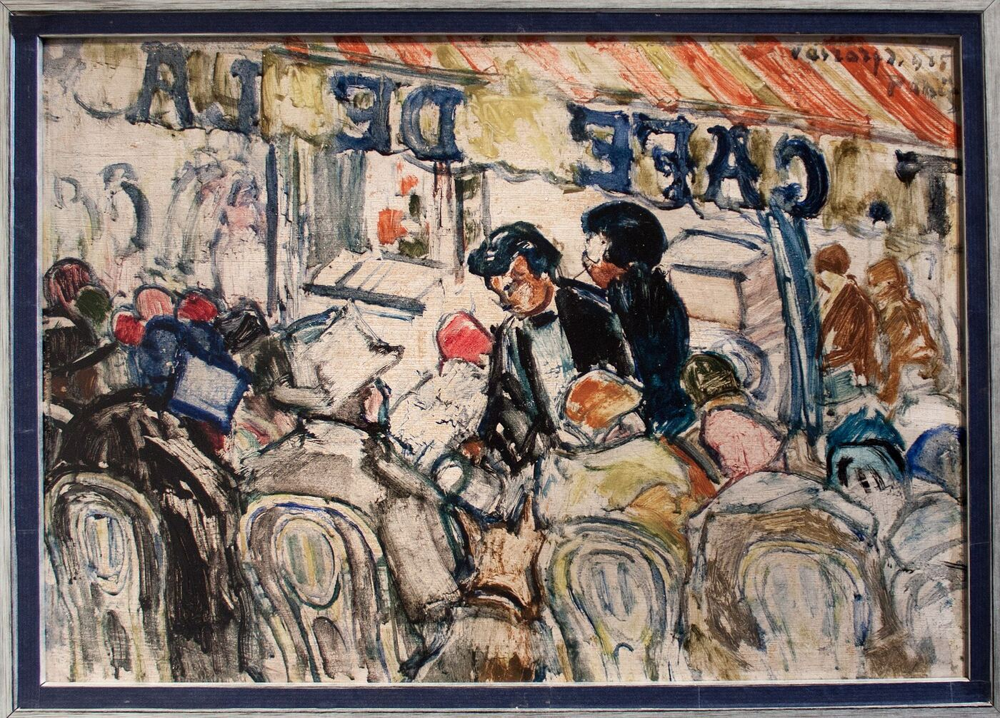
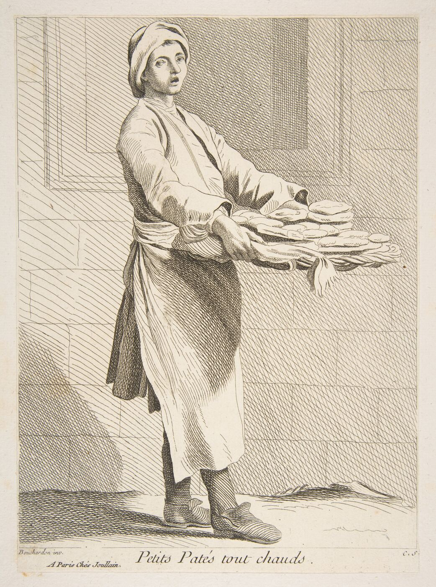

Paris ficaem Itapira

Croissant, crème brûlée e café de barista, trazidos das viagens dos anfitriões para a Getúlio Vargas, 100.
Terça a sexta, 12h às 19h. Sábado, 9h às 18h.
Pedir pelo WhatsAppImagens: János Vaszary, Terraço do Café de la Paix, 1925 (Wikimedia Commons, domínio público); conde de Caylus, Vendedor de pastéis, 1738 (The Met, domínio público).